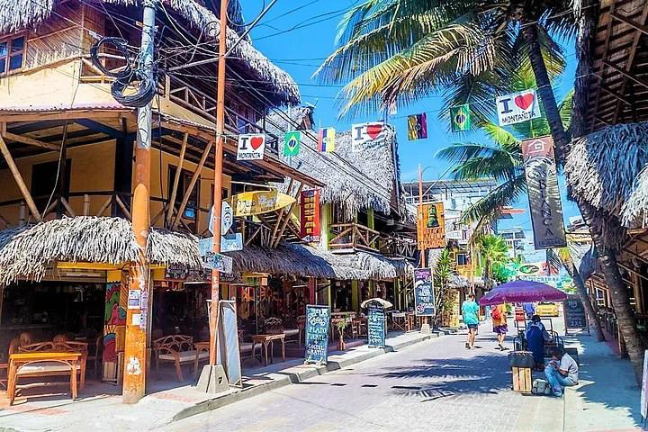
Montañita
📍 Provincia de Santa Elena
Destino costero reconocido por sus playas, su ambiente bohemio y su importancia como lugar de surf.
💡 Destacado: es uno de los destinos de surf más conocidos del Ecuador.
Descubre las 4 regiones naturales del Ecuador: Costa, Sierra, Amazonía e Insular.
Un país de gran diversidad natural y cultural. Recorre sus cuatro regiones y conoce algunos de sus destinos turísticos más representativos.
Comenzar exploraciónSelecciona una región para conocer los destinos incluidos en este proyecto.
La región del Pacífico ecuatoriano reúne playas, naturaleza y una identidad cultural diversa.

📍 Provincia de Santa Elena
Destino costero reconocido por sus playas, su ambiente bohemio y su importancia como lugar de surf.
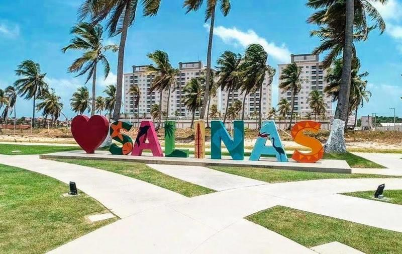
📍 Provincia de Santa Elena
Ciudad costera que combina un entorno urbano moderno con el atractivo del océano y sus playas.
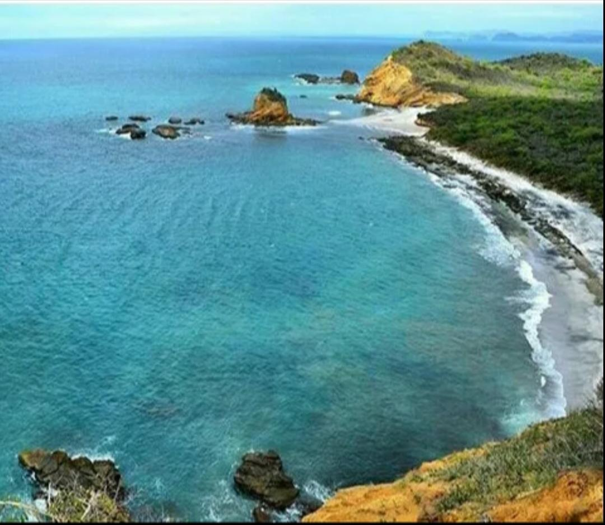
📍 Provincia de Manabí
Destino de la costa manabita y punto de partida para conocer atractivos naturales del entorno marino.
Los Andes ecuatorianos reúnen montañas, volcanes, ciudades históricas y paisajes de gran diversidad.
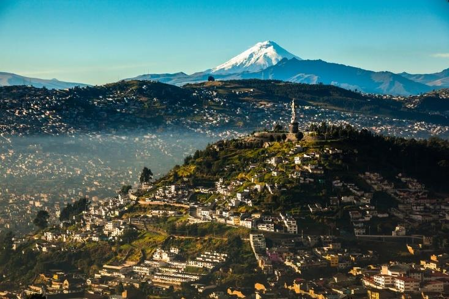
📍 Provincia de Pichincha
Capital del Ecuador, ubicada en el corazón de los Andes y reconocida por la riqueza de su patrimonio histórico y cultural.
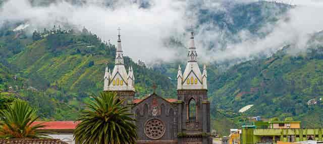
📍 Provincia de Tungurahua
Destino andino rodeado de montañas y cascadas, conocido también por sus aguas termales y paisajes naturales.
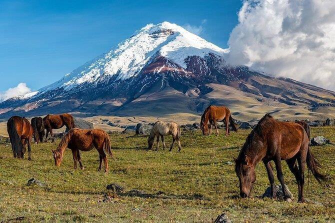
📍 Provincia de Cotopaxi
El Parque Nacional Cotopaxi forma parte de los paisajes más representativos de la Avenida de los Volcanes.
Una región de selva, ríos, pueblos ancestrales y una extraordinaria biodiversidad.
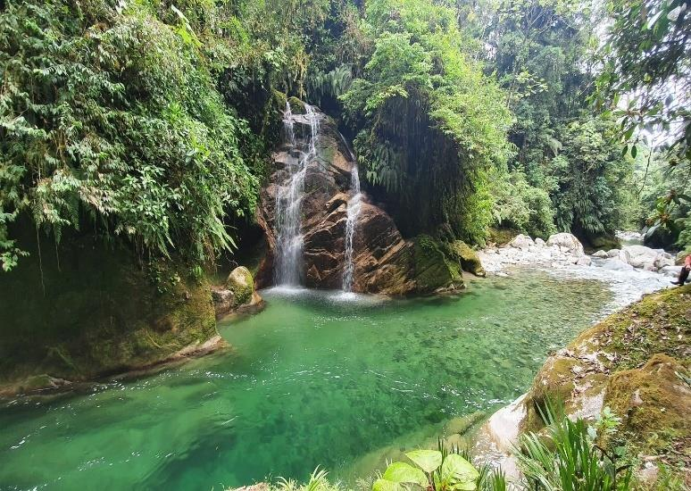
📍 Provincia de Napo
Conocida como una puerta de entrada a la Amazonía, combina naturaleza, cultura, gastronomía y paisajes de selva.
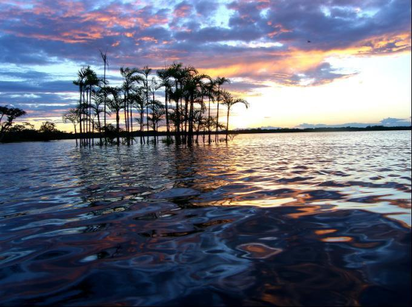
📍 Provincia de Sucumbíos
La Reserva de Producción Faunística Cuyabeno protege bosques húmedos, lagunas y una gran diversidad de flora y fauna.
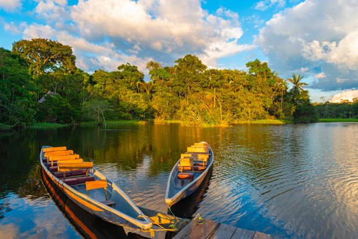
📍 Provincias de Orellana y Pastaza
El Parque Nacional Yasuní es uno de los espacios de mayor biodiversidad del Ecuador y un importante refugio de vida silvestre.
Las islas Galápagos destacan por su origen volcánico, biodiversidad y especies únicas.
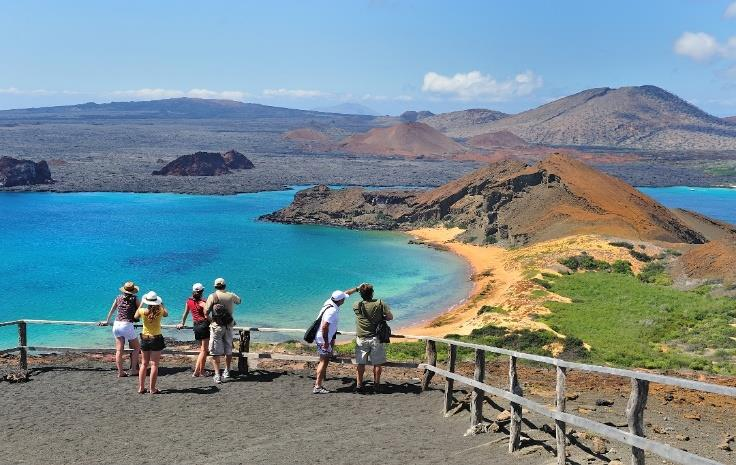
📍 Islas Galápagos
Una de las islas principales del archipiélago, con paisajes volcánicos, túneles de lava y espacios dedicados a la conservación.
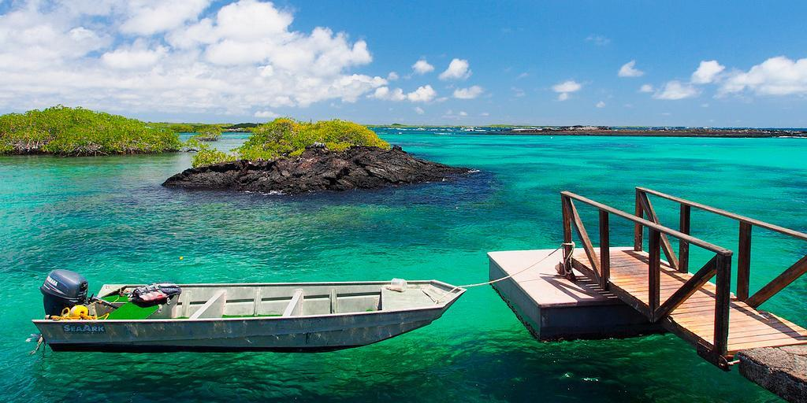
📍 Islas Galápagos
Es la isla más grande del archipiélago y posee una cadena de volcanes que ha formado paisajes únicos.
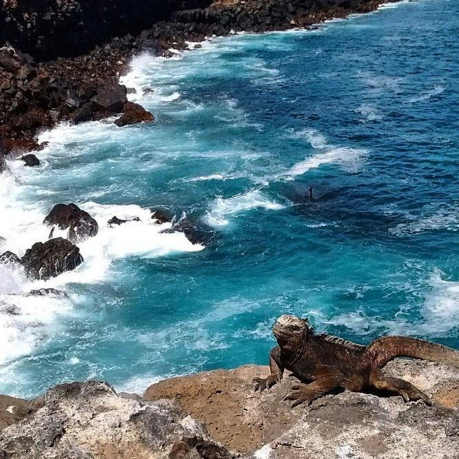
📍 Islas Galápagos
Isla de paisajes naturales, playas y una gran diversidad de fauna, incluyendo lobos marinos, aves y tortugas gigantes.
La información de esta página se elaboró principalmente con material de Ecuador Travel, página oficial de promoción internacional del Ministerio de Turismo del Ecuador.